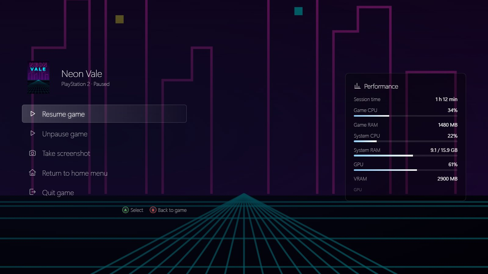
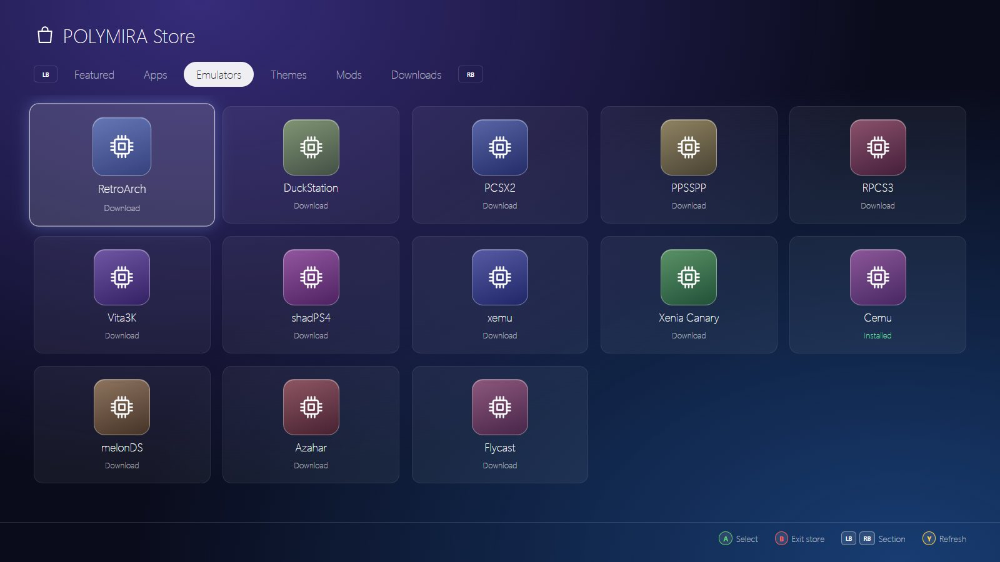
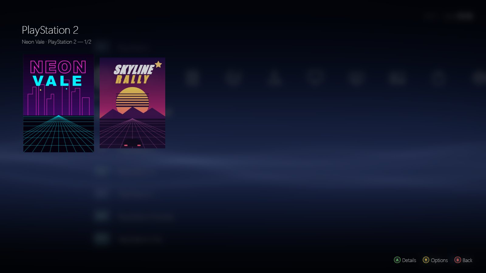

Tour
One interface for everything you play.
No desktop clutter, no nested launcher windows, no manual emulator setup. Every screenshot below is captured directly from the app.
A library that builds itself
The first-run wizard scans every drive for store installs, emulators, and ROM directories. Artwork, metadata, and launch profiles are assembled automatically.
- Steam, Epic, Xbox app, GOG, EA, Ubisoft, Battle.net, and Riot
- PlayStation, Nintendo, Xbox, Sega, and arcade systems through managed emulators
- Play time tracking, last launch result, and honest per-game compatibility status

Press Guide inside any game
Your controller's Guide button opens a system overlay over the running game. The game process suspends cleanly while the menu is active.
- Resume, pause, screenshot, and clean process termination
- Quick save and load states for RetroArch titles
- Live CPU, RAM, and GPU telemetry for both game and host system

Emulators, configured automatically
Supported emulators download from their official upstream releases in the background. Before launch, POLYMIRA writes controller bindings directly so you never touch external setup dialogs.
- RetroArch cores, DuckStation, PCSX2, PPSSPP, RPCS3, Xenia, Cemu, and built-in Orbis
- Automated save backups for every emulator with optional cloud sync folder
- Per-game emulator selection, video filters, and custom launch arguments


